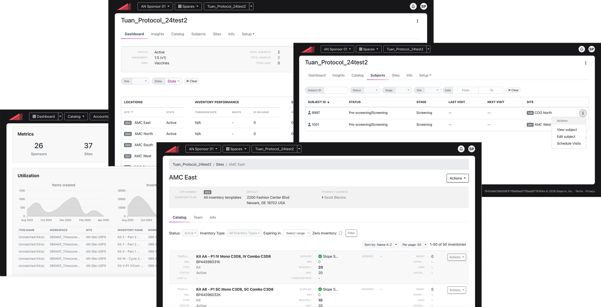
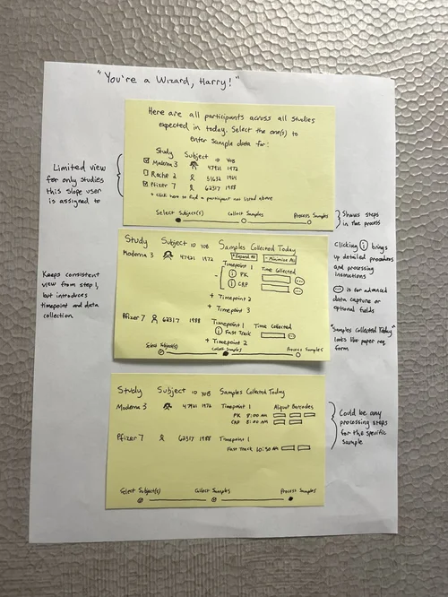
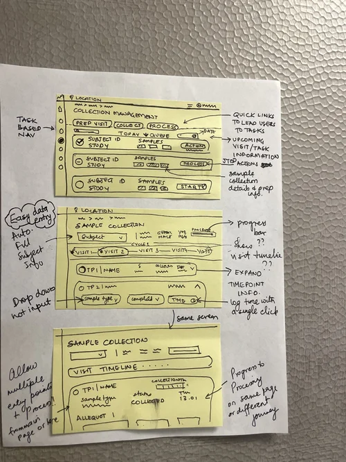
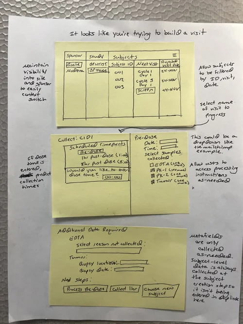
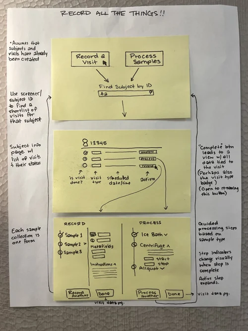
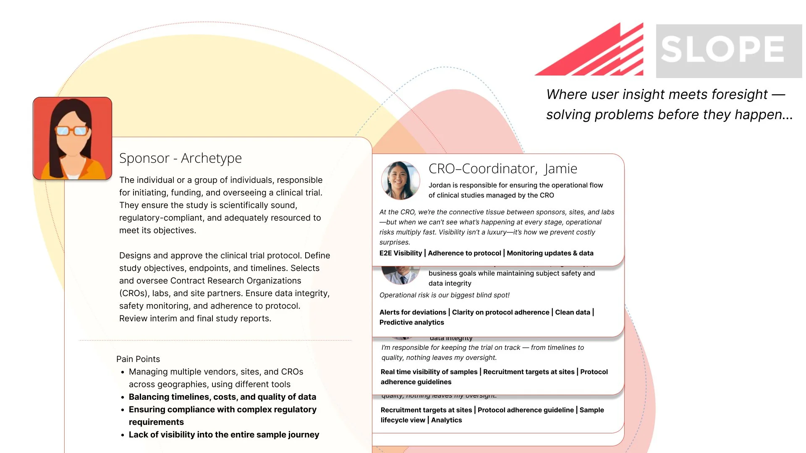
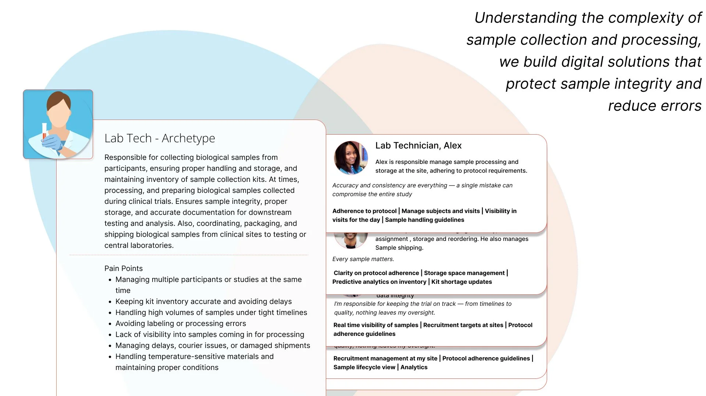

Biospecimen Management Platform
Slope.IO's biospecimen management platform supports the full biospecimen lifecycle from lab kits and samples to associated metadata across pre-collection, collection, and post-collection phases. The platform is built to meet the demands of regulated environments, with a strong focus on compliance.
Shaping the foundation of a platform from the ground up.
I joined Slope at a pivotal moment, as the company began defining its next-generation biospecimen management platform, Biospecimen 360. As the sole designer on the initiative, I was responsible for leading user research, experience design, and validation efforts. The first priority was to establish clarity around the problem space. I led efforts to define the core challenges, identify key user archetypes, and align the team on who we were designing for and why. This foundational work set the direction for a more user-centered product strategy.
Project Goal: Design and deliver an efficient, intuitive biospecimen management system that supports the full operational workflow, including:
The goal was to reduce complexity, improve usability, and ensure the system supports real-world clinical workflows.
Limitations: Resource constraints led me to explore AI tools to increase efficiency and throughput. At the same time, engineering capacity and readiness were still maturing, which impacted overall delivery timelines.
Understanding the problem space end-to-end.
I started with understanding the problem space end-to-end. I began by synthesizing product feedback and deeply analyzing existing workflows to identify structural gaps in the experience. It became clear that the product was not aligned with how clinical teams actually operated in their environments.

The existing product — analyzing current workflows to identify structural gaps in the experience.

Photos from my own site visits — shadowing clinicians and lab technicians to observe biospecimen workflows firsthand.
I conducted interviews and shadowed clinicians to understand real-world biospecimen workflows, user roles, and the need for operational visibility and compliance. These findings shifted our approach from individual features to systems thinking. I defined user archetypes, mapped end-to-end journeys, and established success measures around usability, adoption, and compliance.
This research informed the platform architecture, critical workflows, and reporting capabilities needed to support the biospecimen lifecycle.
Exploring the problem space together.
While we worked to stabilize the team, we brought in external contractors to facilitate a collaborative workshop with Product and Engineering. The workshop brought the team together to explore the complexities of biospecimen management, identify key challenges, and define the problem areas we wanted to address.
We broke into smaller groups to brainstorm potential features and solutions. Engineering helped us understand technical constraints, while Sales contributed insights into customer needs and compliance requirements. This process helped us build a shared understanding of the problem space, align on priorities, and establish a foundation for product direction.




Building alignment before building the product.
I started by building a domain model to map the end-to-end biospecimen lifecycle, connecting workflows, systems, and the people involved. This helped us establish a shared understanding of the ecosystem, identify gaps and dependencies, and plan the integrations needed to support a connected experience.
Interactive model

Domain model — mapping the full biospecimen lifecycle across inventory tracking, visit scheduling, sample management, shipping, and storage.

Sponsor and CRO Coordinator archetypes — defining oversight and operational roles.

Lab Technician archetype — grounding collection and processing workflows in real user needs.
 · sample collection.jpg)
Lab Tech journey — sample collection workflow.
 · prep kits.jpg)
Lab Tech journey — prep kits workflow.
From journeys to shipped product.
I established the product vision and translated it into features, user stories, and sprint-level designs in partnership with product management. I built a reusable, code-based React component library alongside the Figma design system, and used TypeScript and React to create functional prototypes for testing interactions through clickable experiences.
Biospecimen 360 received positive validation through user testing, with adoption across multiple sites and the inventory management across 200+ clinical sites with $10M+ in contracts secured.